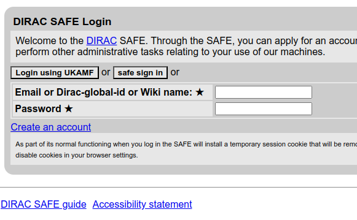

Setup#
The Cambridge Service for Data Driven Discovery (CSD3) has a nice documentation. To access the cluster, you need to have an account. Now there are two SAFE different SAFE accounts.
https://safe.epcc.ed.ac.uk/ : For ARCHER2 registration
https://safe.epcc.ed.ac.uk/dirac/ : For CSD3 registration
In my case I already had a SAFE account for ARCHER2, so I used the same account to access CSD3. Just need to click on safe sign in button and use SAFE ARCHER2 credentials.

TOTP generation#
Unlike other HPC clusters, CSD3 doesn’t involve any password. You have to upload at least one public key to SAFE DIRAC account. Once that is done, you can generate a TOTP token through a special node: multi.hpc.cam.ac.uk.
Multiplexing SSH connections#
One of the problems with CSD3 is that you have to use the TOTP token every single time you login to CSD3. One way to avoid is use by multiplexing ssh connections. The first login will open a master connection and all subsequent connections will use the master connection. This way you only need to enter the TOTP token once, until the master connection is dies or closed.
We need to add the following lines to the ~/.ssh/config file.
Host CSD3
User ir-shar8
HostName login.hpc.cam.ac.uk
ControlMaster auto
ControlPath ~/.ssh/control-%C
ControlPersist 3600
ServerAliveInterval 60
ServerAliveCountMax 5
Here,
ControlMaster auto: This will open a master connection.ControlPath ~/.ssh/control-%C: This will store the master connection in the~/.ssh/directory.%Censures a unique filename based on host/user/port to avoid conflicts.ControlPersist 3600: This will keep the master connection alive for 3600 seconds or 1 hour.ServerAliveInterval 60: Sends a keep-alive packet every 60 seconds to prevent idle disconnects.ServerAliveCountMax 5: SSH will retry sending 5 keep-alive packets before considering the connection dead.
Now the first connection will ask for the TOTP token. All subsequent connections will use the master connection for the next one hour. We can actually check the master connection by running the following command.
ls -l ~/.ssh/control-*